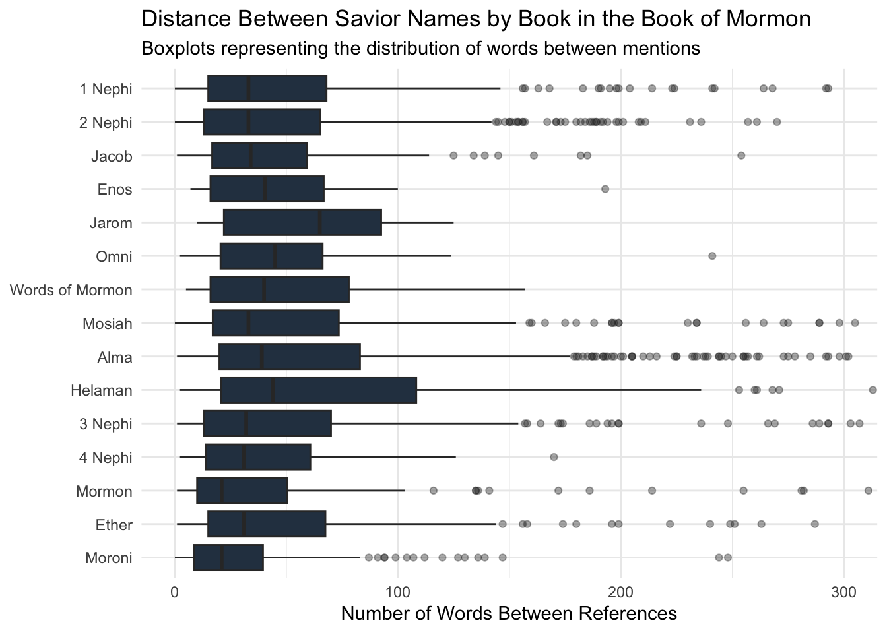

library(tidyverse)scriptures <-read_csv("https://github.com/beandog/lds-scriptures/raw/master/csv/lds-scriptures.csv")savior <-read_rds("https://byuistats.github.io/M335/data/BoM_SaviorNames.rds")savior_regex <- savior |>arrange(desc(nchar)) |>pull(name) |>unique() |>str_c(collapse ="|")savior_regex <-paste0("\\b(", savior_regex, ")\\b")# chronological orderbom_levels <- scriptures |>filter(volume_title =="Book of Mormon") |>pull(book_title) |>unique()book_distances <- scriptures |>filter(volume_title =="Book of Mormon") |>mutate(book_title =factor(book_title, levels = bom_levels)) |># don't sort alphabetically latergroup_by(book_title) |>summarize(book_text =str_c(scripture_text, collapse =" "), .groups ="drop") |>mutate(words_between =map(book_text, \(text) { split_text <-str_split(text, pattern = savior_regex) |>unlist()# drop the first and last chunks if(length(split_text) >2) { chunks_between <- split_text[-c(1, length(split_text))]str_count(chunks_between, "\\S+") } else {numeric(0) } }) ) |># unnest in each rowunnest(words_between)
Plot
Code
ggplot(book_distances, aes(x = words_between, y =fct_rev(book_title))) +geom_boxplot(fill ="#2c3e50", color ="#333333", outlier.alpha =0.4, outlier.size =1.5) +theme_minimal() +# zoom to 0-300 to cut out the massive outlierscoord_cartesian(xlim =c(0, 300)) +labs(title ="Distance Between Savior Names by Book in the Book of Mormon", subtitle ="Boxplots representing the distribution of words between mentions", x ="Number of Words Between References", y =NULL)

Summary
The boxplot definitely back up Susan Easton Black’s quote, showing that the median distance between mentions of the Savior stays consistently low—around 25 to 50 words—across almost every single book. You can clearly see how the narrative style affects the spacing, books heavy on history or conflict like Helaman have wider boxes, while Alma is absolutely packed with outliers stretching all the way to the 300-word limit. On the flip side, books like Moroni and Mormon have super tight distributions, meaning the references to Christ are packed very closely together. Overall, despite the long tails from some of the story heavy sections, the graph proves His name is constantly woven throughout the entire text.
AI USAGE
Helped me to used fct_rev(book_title) on the y-axis of the plot. By default, ggplot builds the y-axis from the bottom up, which would put 1 Nephi at the bottom. Reversing it ensures 1 Nephi is at the top, making it read naturally from top to bottom. Copilot helped me write the analysis too.